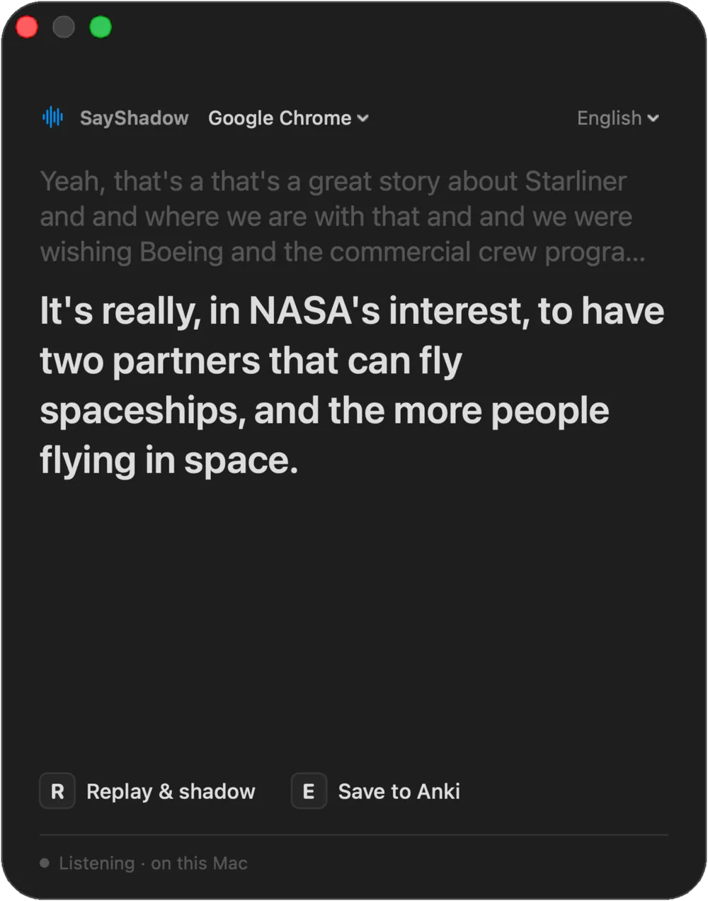
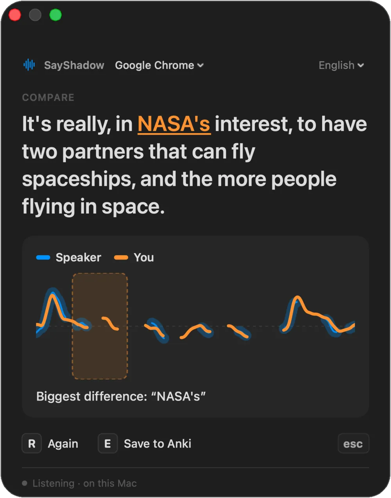
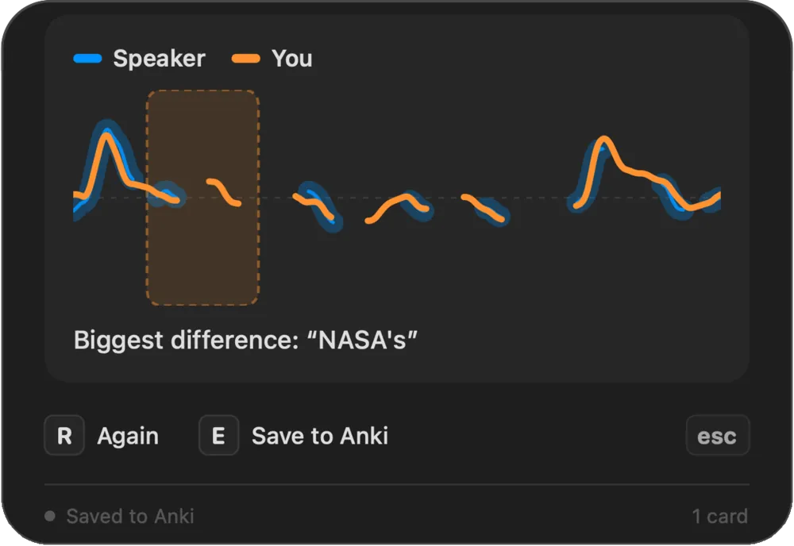

SayShadow for Mac
Shadow any sentence your Mac plays.
Replay a line from any video or podcast, say it yourself, and see where your melody differs from the speaker’s. Save it to Anki with one key.
- Free
- macOS 26 or later
- Runs on your Mac
- No account
How it works
Built for shadowing: no subtitles needed, no copying links, no switching apps.
-
Pick the app that’s talking.
Play a video, podcast or online course, then pick that app in the menu at the top left of the SayShadow window. SayShadow listens to that app only and writes along as people speak.

Speaker audio: NASA video, played in Chrome. -
Press R and say it yourself.
R replays the sentence. Repeat it, and SayShadow draws your melody next to the speaker’s and marks the word where they differ most. Press R again to try once more.

Speaker audio: NASA video, played in Chrome. Learner: synthetic voice (simulated). -
Press E to keep it.
The sentence becomes an Anki flashcard with the original audio, your attempt and both curves. Cards are saved as an Anki deck file (.apkg) in a folder you choose, or go straight into Anki with the AnkiConnect add-on.

Speaker audio: NASA video, played in Chrome. Learner: synthetic voice (simulated).
The window floats next to your video. R and E also work from any app with Option-Command.
Private by design
What you hear, say and save stays on your Mac.
On-device speech recognition
Transcription uses Apple’s on-device speech recognition on your Mac.
Nothing uploaded
Audio is kept in memory for the last three minutes only. Nothing is uploaded.
No account, no tracking
No sign-in, no analytics, no advertising, no third-party SDKs.
Your cards, your folder
Cards go into a folder you choose, or into Anki running on the same Mac.
What you need
- Mac
- macOS 26 or later.
- Permissions
- System Audio Recording, to hear the app you pick, and Microphone, to record your attempt. SayShadow explains both on first launch.
- Language
- Version 0.1 supports English.
- Anki
- Optional, to study your cards. Free at apps.ankiweb.net.
- Price
- Free.
Support
Questions, problems or ideas? Write to us.
We usually answer within two working days.
Common questions
No words appear.
Check that the app you picked is playing sound. Allow SayShadow under System Settings › Privacy & Security › System Audio Recording. The first time, macOS downloads speech recognition for the language; this can take a minute.
My attempt is not recorded.
Allow SayShadow under Privacy & Security › Microphone, and check that a microphone is connected.
Where are my cards?
In the folder you chose when saving the first card, as one Anki deck file (.apkg). Double-click it to import it into Anki. To change the folder, use Choose Deck Folder… in the menu bar icon. If Anki is open with the AnkiConnect add-on, cards go straight into Anki.
What does the comparison measure?
SayShadow compares the melody (pitch over time) of your attempt with the speaker’s, after lining both up in time, and marks the word where they differ most. It measures pitch, not the pronunciation of individual sounds.
Which languages are supported?
Version 0.1 supports English.
Does SayShadow send my audio anywhere?
No. Speech recognition runs on your Mac, and nothing you hear, say or save is uploaded. macOS may download the speech model for a language once from Apple.